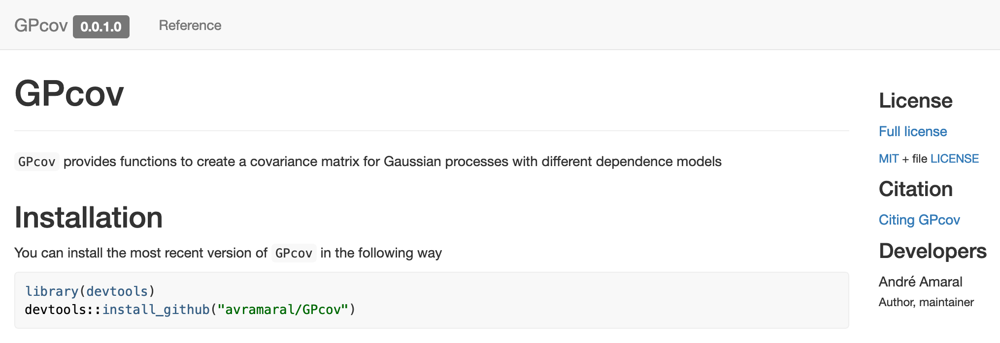
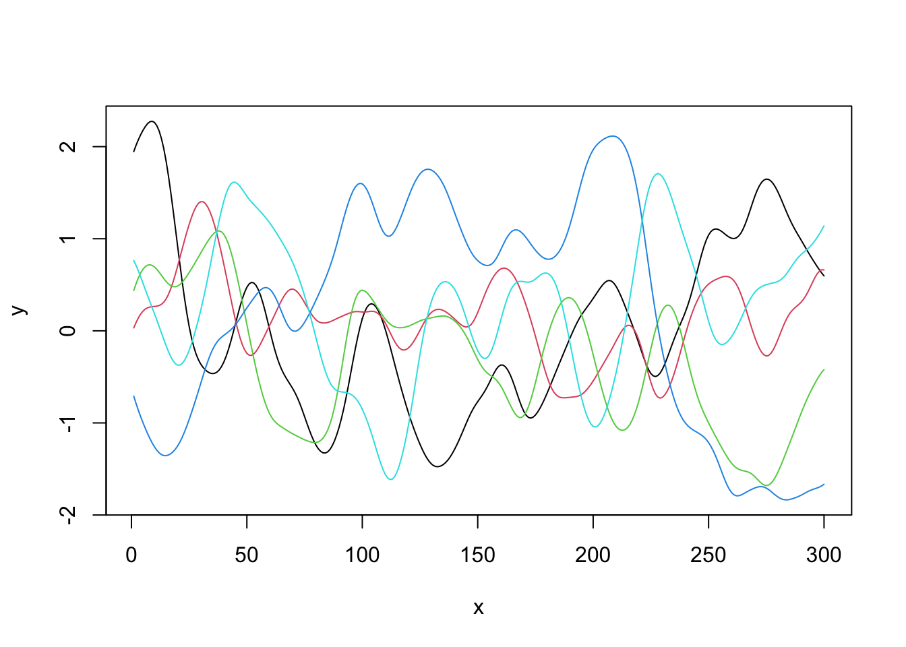

In this tutorial, we will create an R package (GPcov) that computes the covariance matrix for Gaussian Processes with different dependence structures. Also, we will create a website for our package using pkgdown. The image below shows an screenshot of our packages’ website

As a reference, for this tutorial, besides Professor Paula’s notes, I mostly used the R Packages book, which is freely available online.
To create the R package, we will use different tools (e.g., roxygen2 for documentation); however, most of the desired functionalities are encapsulated into two packages, namely usethis and devtools. We only need to load devtools, though (since it calls usethis internally). If you do not have them installed, do it and load devtools.
install.packages(c("devtools", "roxygen2"))
library("devtools")The first step will be creating a project for our R package. We can do this with
usethis::create_package(path = '~/Desktop/Project/GPcov') # Change the path!Since a new R session has been initialized, you have to load the devtools library again.
library("devtools")Now, recalling that we want to have our project on GitHub (so people can use it), we will set a new Git repository and do an initial commit. This can be done using the following command
usethis::use_git(message = 'initial commit')If you are using RStudio and have to restart R, notice that we need to load devtools again.
library("devtools")At this point, we have the following file structure
GPcov/
├── .gitignore
├── .Rbuildignore
├── .Rhistory
├── DESCRIPTION
├── NAMESPACE
├── GPcov.Rproj
└── R/
└── .Now, we can start modifying the files.
The first file we will change is DESCRIPTION. Here, we would like to describe our package’s functionalities, so that other people may have a rough idea on how it works. For GPcov, I edited it in the following way (change it as per your convenience)
Package: GPcov
Title: Compute covariance matrix for Gaussian processes
Version: 0.0.1.0
Authors@R:
person("André", "Amaral", , "avramaral@gmail.com", role = c("aut", "cre"))
Description: This package provides functions to create a covariance matrix for Gaussian processes with different dependence structures.
License: `use_mit_license()`, `use_gpl3_license()` or friends to pick a license
Encoding: UTF-8
LazyData: true
Roxygen: list(markdown = TRUE)
RoxygenNote: 7.1.2After changing the DESCRIPTION file, let’s try to check if our (empty) package is being correctly defined. To do this, we can use the following command
devtools::check()The (truncated) output was
> checking DESCRIPTION meta-information ... WARNING
Non-standard license specification:
`use_mit_license()`, `use_gpl3_license()` or friends to pick a
license
Standardizable: FALSE
0 errors ✓ | 1 warning x | 0 notes ✓The above function, as the name suggests, check if there is any problem with our package code. And notice that we had a warning since we did not set a License for our project. Many options are available, but one alternative is running the following command
usethis::use_mit_license()Now, we can check our package code again. We expect no errors.
devtools::check()R codeOur R code is very simple (see below), and the main function is compute_cov_matrix(). During the tutorial, I will briefly go through it. However, our main goal will not be discussing the code itself, but creating an R package based on it.
library("GPBayes")
compute_distance <- function (p, q) {
dim_p <- length(p)
dim_q <- length(q)
if (dim_p != dim_q) {
stop("Points should have the same dimension.")
} else {
partial <- 0
for (i in 1:dim_p) {
partial <- partial + ((p[i] - q[i]) ^ 2)
}
}
sqrt(partial)
}
white_noise <- function (p, q, sig2, a) {
if (sum(p != q) == 0) {
result <- sig2
} else {
result <- 0
}
result
}
brownian_motion <- function (p, q) {
if (length(p) != 1) {
stop("Brownian motion covariance function can only be computed for 'd = 1'.")
} else {
result <- min(p, q)
}
result
}
exponential <- function (p, q, sig2, beta) {
if (is.null(beta)) { beta <- 1 }
(sig2 * exp(-1 * compute_distance(p, q) / beta))
}
matern_model <- function (p, q, sig2, nu, beta) {
if (is.null(nu)) { nu <- 1 } # Whittle covariance function
if (is.null(beta)) { beta <- 1 }
dist <- compute_distance(p, q)
if (sum(p != q) == 0) {
result <- sig2
} else {
result <- ((sig2 / ((2 ^ (nu - 1)) * gamma(nu))) * ((dist/ beta) ^ nu) * GPBayes::BesselK(nu = nu, z = (dist / beta)))
}
result
}
compute_cov_function <- function (p, q, cov_func = "white_noise", arg) {
if (is.null(arg[["sig2"]])) { sig2 <- 1 } else { sig2 <- arg[["sig2"]] }
switch(EXPR = cov_func,
white_noise = {
cov_element <- white_noise(p = p, q = q, sig2 = sig2)
}, brownian_motion = {
cov_element <- brownian_motion(p = p, q = q)
}, exponential = {
cov_element <- exponential(p = p, q = q, sig2 = sig2, beta = arg[["beta"]])
}, matern_model = {
cov_element <- matern_model(p = p, q = q, sig2 = sig2, nu = arg[["nu"]], beta = arg[["beta"]])
}, {
stop("Select a valid covariance model.")
})
cov_element
}
compute_cov_matrix <- function (points, cov_func, ...) {
arg <- list(...)
if (!is.data.frame(points)) {
stop("'points' should be a data frame with 'n' rows and 'd' columns.")
} else {
n <- nrow(points)
cov_matrix <- matrix(data = NA, nrow = n, ncol = n)
for (i in 1:n) {
for (j in i:n) {
cov_matrix[i, j] <- compute_cov_function(p = unlist(as.vector(points[i, ])), q = unlist(points[j, ]), cov_func = cov_func, arg = arg)
cov_matrix[j, i] <- cov_matrix[i, j]
}
}
}
cov_matrix
}Based on the above code, we will create the .R files so that we can write (copy/paste) our functions into the package project. To do this, we will use the usethis::use_r() function. Create the following files
usethis::use_r(name = "compute_cov_matrix")
usethis::use_r(name = "compute_cov_function")
usethis::use_r(name = "utils")
usethis::use_r(name = "cov_models")We will place the functions into the files as follows
# FILE = compute_cov_matrix.R
compute_cov_matrix <- function (points, cov_func, ...) {
# CONTENT
}# FILE = compute_cov_function.R
compute_cov_function <- function (p, q, cov_func = "white_noise", arg) {
# CONTENT
}# FILE = utils.R
compute_distance <- function (p, q) {
# CONTENT
}# FILE = cov_models.R
white_noise <- function (p, q, sig2, a) {
# CONTENT
}
brownian_motion <- function (p, q) {
# CONTENT
}
exponential <- function (p, q, sig2, beta) {
# CONTENT
}
matern_model <- function (p, q, sig2, nu, beta) {
# CONTENT
}Notice that we did not have to load the GPBayes library into the .R files (using library(GPBayes)); however, for all functions imported from other packages, we have to make sure that we are also specifying their namespace, i.e., we have write package::function() when calling them (as we did with GPBayes::BesselK()).
Now, we can check our code.
devtools::check()Remark: if we hadn’t written GPBayes::BesselK() when calling BesselK(), we would have seen a note:
> checking R code for possible problems ... NOTE
matern_model: no visible global function definition for ‘BesselK’
Undefined global functions or variables:
BesselK
0 errors ✓ | 0 warnings ✓ | 1 note xHowever, we still have a problem (in particular, a warning). As in the below output from the check() command, we did not declare the GPBayes package.
> checking dependencies in R code ... WARNING
'::' or ':::' import not declared from: ‘GPBayes’
0 errors ✓ | 1 warning x | 0 notes ✓To overcome this issue, we can use the use_package() function.
usethis::use_package(package = "GPBayes")The above command updated the DESCRIPTION file to account for the GPBayes package in the Imports section. Check it!
Finally, we can check() our code again. We expect no errors.
devtools::check()GPcovSince we already have a minimum viable product, we can test our GPcov package. To do this, we can use the following command
devtools::load_all()
# After documenting all necessary functions, we can load only the exported functions.
# To do so, we can run
# devtools::load_all(export_all = FALSE)Now, we have access to all coded methods as if the package was installed in our machine. However, as noted in the R Packages book, the corresponding functions do not exist in the global environment. Read this section for more details. In particular, the following command should return FALSE.
exists("compute_cov_matrix", where = globalenv(), inherits = FALSE)## [1] FALSEAs the package is being simulated as it was installed and loaded, we can compute a covariance matrix using the compute_cov_matrix() function. Also, using the mvrnorm() function (from the MASS package), we can simulate from the corresponding (zero-mean) Gaussian process.
x <- data.frame(seq(from = 1, to = 300, by = 1))
C <- compute_cov_matrix(points = x, cov_func = 'matern_model', nu = 5, beta = 5)
print(dim(C))## [1] 300 300C[1:5, 1:5]## [,1] [,2] [,3] [,4] [,5]
## [1,] 1.0000000 0.9975042 0.9900662 0.9778325 0.9610392
## [2,] 0.9975042 1.0000000 0.9975042 0.9900662 0.9778325
## [3,] 0.9900662 0.9975042 1.0000000 0.9975042 0.9900662
## [4,] 0.9778325 0.9900662 0.9975042 1.0000000 0.9975042
## [5,] 0.9610392 0.9778325 0.9900662 0.9975042 1.0000000library(MASS)
set.seed(1)
GP <- mvrnorm(n = 5, mu = rep(0, nrow(C)), Sigma = as.matrix(C))
plot(GP[1, ], type = 'l', ylim = c(min(GP), max(GP)), xlab = 'x', ylab = 'y')
for (i in 2:nrow(GP)) {
lines(GP[i, ], col = i)
}
To make our functions more user-friendly, it is important to document our code. For example, if we run ?compute_cov_matrix now, nothing will happen; however, we would like to change it, so that users can understand how the methods work.
Since the compute_cov_matrix() is the only function the users should have access to (other functions are only supposed to be internally used), that is the only one we will document and export. To do this, on the compute_cov_matrix.R file, update your code in the following way
#' Compute covariance matrix for a Gaussian process
#'
#' @param points A data frame with `n` rows and `d` columns.
#' @param cov_func A covariance model. Options are `white_noise`, `brownian_motion`, `exponential`, and `matern_model`. For all functions, one can provide `sig2`.
#' Also, for the `exponential` model, one has to provide the parameter `beta`, and for the `matern_model` model, the parameters `nu` and `beta`.
#' See \url{https://avramaral.github.io/STAT294/rpack.html} for more details.
#' @param ... Additional parameters. See above.
#'
#' @return An `n` by `n` covariance matrix.
#' @export
#'
#' @examples
#' x <- seq(1, 10, 1)
#' y <- seq(1, 10, 1)
#' z <- expand.grid(x, y)
#' compute_cov_matrix(points = z, cov_func = "matern_model", sig2 = 1, nu = 1, beta = 10)
compute_cov_function <- function (p, q, cov_func = "white_noise", arg) {
# CONTENT
}From the above code, notice that we have to define the parameters (@param), the function return (@return), and we may also give an example (examples) of how to use it. Also (this part is super important) we have to export (@export) the function, so that it can be accessed by the users once the package is installed.
We will also document the package itself. To do this, create an .R file named GPcov
usethis::use_r(name = "GPcov")On this file, include the following code
#' GPcov: A package for computing the covariance matrix for Gaussian processes
#'
#' The `GPcov` package provides one important function, namely, `compute_cov_matrix()`.
#'
#' @section `GPcov` functions:
#' The `compute_cov_matrix()` function computes the covariance matrix for a given model.
#'
#' @docType package
#' @name GPcov
#'
#' @import GPBayes
NULLFrom the above code, most parts are easy to follow. I just want to call your attention to the @import command (in particular, @import GPBayes). When creating the documentation, this command will include the GPBayes as a pre-requisite package in the NAMESPACE file (which is what we want).
Finally, to create the documentation, run the following function
devtools::document()Now, we have a new folder (man) with all documentation files (with .Rd extension). Also, the NAMESPACE file has been updated. Check it!
Now, we will focus on an import part of any software development, namely unit testing. The idea is have reproducible tests that guarantee that our functions have the expect behavior under different scenarios. For a deeper discussion on “Why should I write unit tests?”, check this book chapter.
For our package, we will only write tests for the compute_cov_matrix() function. But of course you can extent them to other methods too. To create a test file, we can use the following command
usethis::use_test(name = "compute_cov_matrix")The above command will create the following folders and files tests/testthat/, tests/testthat.R, tests/testthat/test-compute_cov_matrix.R. Also, it will update the DESCRIPTION file.
In the tests/testthat/test-compute_cov_matrix.R file, we can write our unit tests.
test_that("verify if the computed covariance matrix is semi-positive-definite", {
z <- data.frame(seq(from = 1, to = 10, by = 1))
expect_equal(matrixcalc::is.positive.semi.definite(x = compute_cov_matrix(points = z, cov_func = "white_noise")), TRUE)
expect_equal(matrixcalc::is.positive.semi.definite(x = compute_cov_matrix(points = z, cov_func = "brownian_motion")), TRUE)
expect_equal(matrixcalc::is.positive.semi.definite(x = compute_cov_matrix(points = z, cov_func = "exponential")), TRUE)
expect_equal(matrixcalc::is.positive.semi.definite(x = compute_cov_matrix(points = z, cov_func = "matern_model")), TRUE)
})Notice that we are using the expect_that() method from the testthat package to make sure that our computed covariance matrix is positive-semi-definite (as it has to be).
To run the tests, we can both select and run the code locally, or
devtools::test()However, to do this, make sure to include the matrixcalc package in the Suggests first.
usethis::use_package(package = "matrixcalc", type = "Suggests")After doing that, this is the expected outcome
ℹ Loading newGP
ℹ Testing newGP
✓ | OK F W S | Context
✓ | 4 | compute_cov_matrix
══ Results ═════════════════════════════════════════════════════════
[ FAIL 0 | WARN 0 | SKIP 0 | PASS 4 ]The unit tests will also be checked if we check() our project
devtools::check()GPcov locallyOnce we have a well-structured package, we can install it locally using the following command
devtools::install(build_vignettes = TRUE)The build_vignettes argument is optional, but we will write a vignette latter, and it will be good have it available too.
Once it is installed, you can open another R session and try to load and play with GPcov.
library(GPcov)
# CODETry it! For instance, you access the package documentation by typing ?GPcov and ?compute_cov_matrix.
README file and GitHubAssuming we want to share our package with the world, the easiest way to do this is publishing it on GitHub (for instructions on how to submit your package to CRAN, see this book chapter). But first, let’s create a README file for our project.
A README file is especially important when our project is hosted in a GitHub repository, since it will give users an overview of the package’s functionalities. It will also be used pkgdown when creating a website.
To do this, we can use the following command
usethis::use_readme_rmd()Notice that a README.Rmd file has been created, and we can edit it as we want. Make sure to describe well how your package works, so that users can have an idea if they should install your project. For the purposes of this tutorial, you can copy the content from this snippet.
However, notice that this is a .Rmd file. Instead, we need a .Rm file. To create the README.Rm file, you can do as follows
devtools::build_readme()Now, let’s check our project.
devtools::check()GPcov to GitHubAssuming everything is working with no errors, we can push our project to GitHub. To do this, you can follow this tutorial. In particular, after setting your credentials, creating a new repository on Github, and linking it to your local project, you can use
git add .
git commit -m 'full package'
git pushA vignette can be used as a small example of how to use your package. To create one, we can do as follows
usethis::use_vignette(name = "introduction", title = "Introduction to GPcov")From the command, notice that a few folders and files have been created. However, we are interested in editing vignettes/introduction.Rmd. As for the README file, you can write it as you want; however, for this tutorial you can copy the content from this snippet.
Also, since we are using other packages to run the vignettes, we have to include them in the Suggests section. In particular, we have to
usethis::use_package(package = "knitr", type = "Suggests")
usethis::use_package(package = "rmarkdown", type = "Suggests")
usethis::use_package(package = "pheatmap", type = "Suggests")
usethis::use_package(package = "MASS", type = "Suggests")After doing this, you can build the vignettes (build_vignettes()) and build the package (devtools::buil()).
devtools::build_vignettes()
devtools::build()Now, check() our code.
devtools::check()Personally, I had problems with check() after including the vignettes first time I tried. To overcome these issues, I had to update knitr and rmarkdown.
install.packages(c("knitr", "rmarkdown"))Then, after checking it again (check()) I had no other errors.
As we updated our project, we would like to have these changes being reflected on our GitHub repository. Therefore,
git add .
git commit -m 'add vignette'
git pushGPcov website with pkgdownTo create a package website, we will use pkgdown. Thus, the first thing we have to do is installing and loading the package.
install.packages("pkgdown")
library("pkgdown")Once we have it installed, the first step is to configure GPcov to use pkgdown. This can be done as follows
usethis::use_pkgdown()Notice that a few folders and files have been created. For now, it suffices to change _pkgdown.yml. After opening it, write the following lines of code
url: https://username.github.io/repositoryname
lang: enwhere username and repositoryname has to be replaced to the appropriate values. In my case, avramaral and GPcov, respectively.
Now, we have to build the website
pkgdown::build_site()Although the website is already fully working now, you can change it more. To see how to do this, refer to this vignette.
After following all these steps, a few files and folders were automatically included in the .gitignore file (when they should not have been included). In this way, make sure to remove the following lines (if any) from your .gitignore file before doing the commit.
docs
inst/doc
/doc/
/Meta/Finally, we can commit the changes and push them to our Github repository.
git add .
git commit -m 'add website'
git pushAs a last step, set the GitHub page as we learned here. Also, make sure to point the website to the /Docs folder. And this is the final result.
GPcov from GitHubBased on this page, you can see the instructions to installing an R package from GitHub. In particular, after push it to GitHub, the package can be installed with
library(devtools)
devtools::install_github("username/repositoryname", build_vignettes = TRUE)where username and repositoryname has to be replaced to the appropriate values. Also, build_vignettes = TRUE is optional (although it is recommended).